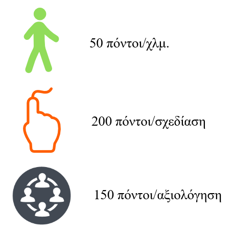

The PeersOnMap is an Android application, that based on users contribution with a purpose of creating a map more friendly to pedestrians and cyclists. Users are motivated through gamification to upload paths during walking or bicycling. Peer Reviewing is a base concept on PeersOnMap application and help to improve the produced map, through physical present of users in order to correct recorded paths.
You can download the application from the image below until it is uploaded in Google Play Store. Minimum Supported Version: Android Jelly Bean (API 16)
PoM Google Play Game basic points system
